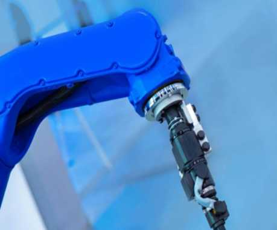
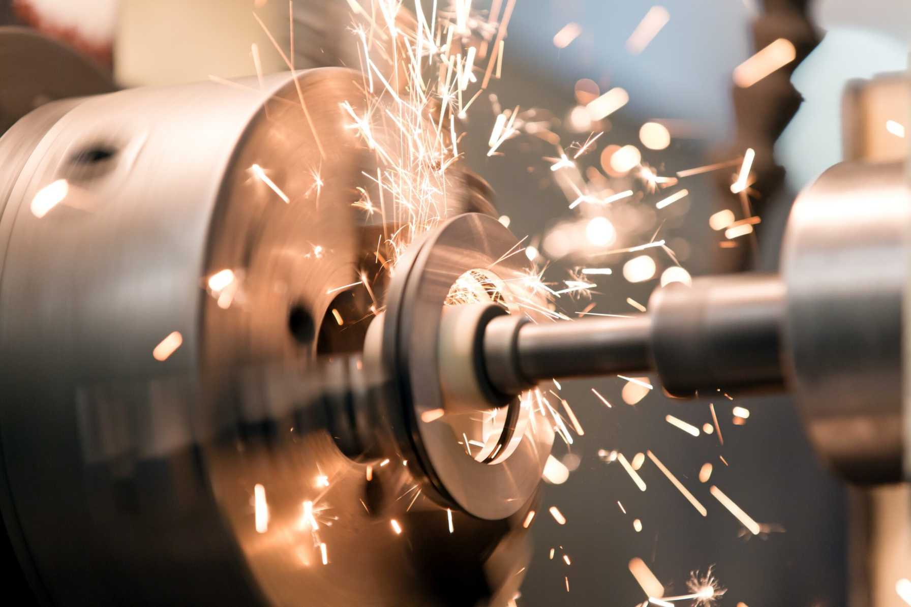
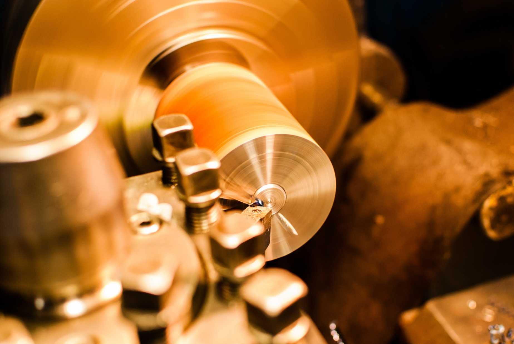
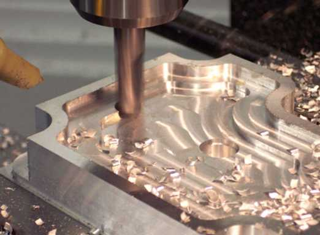
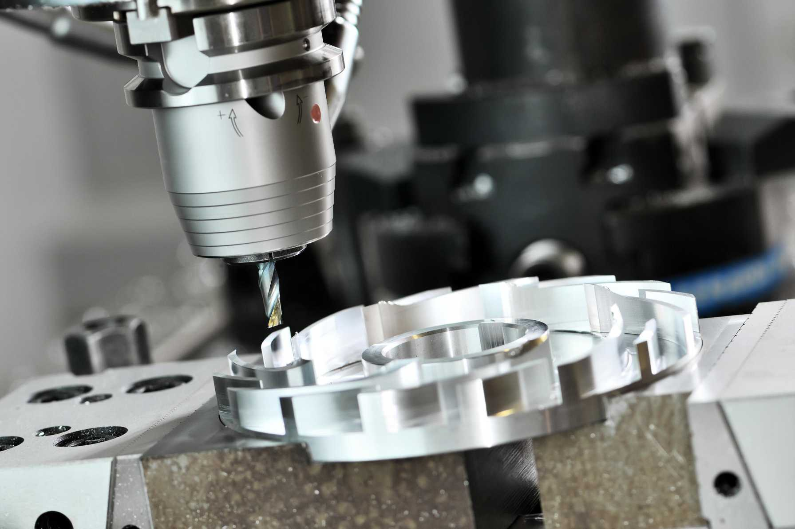
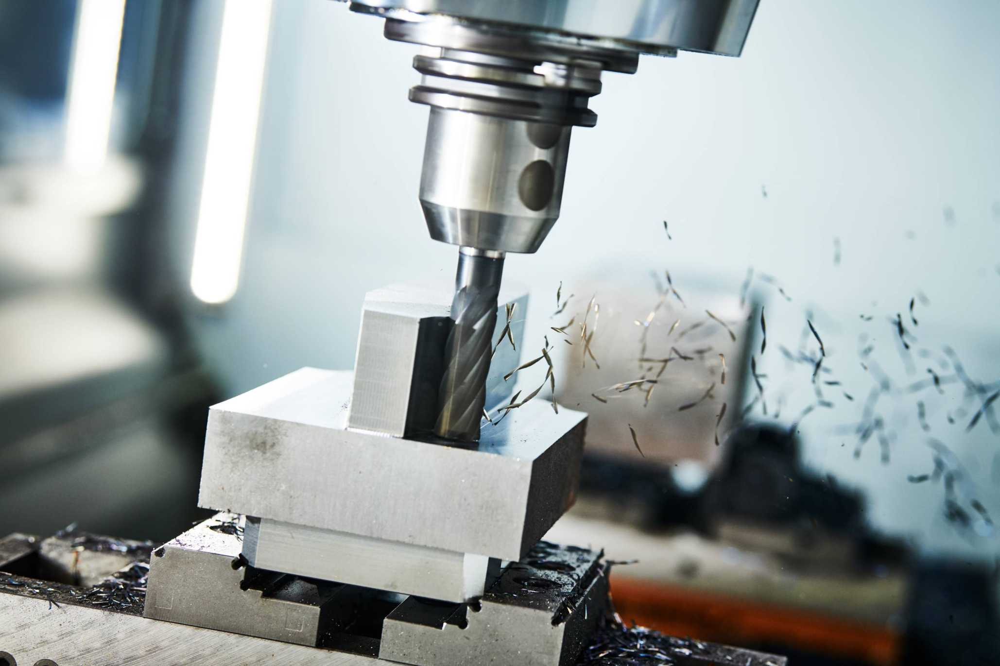
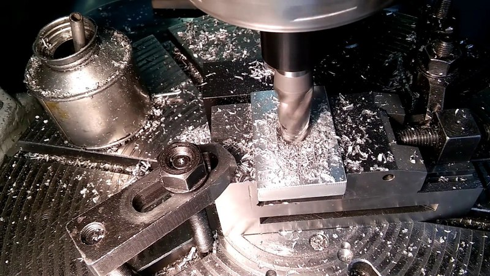
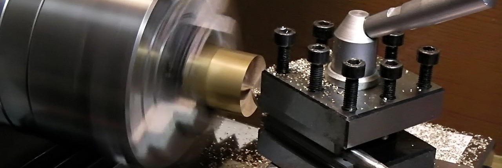
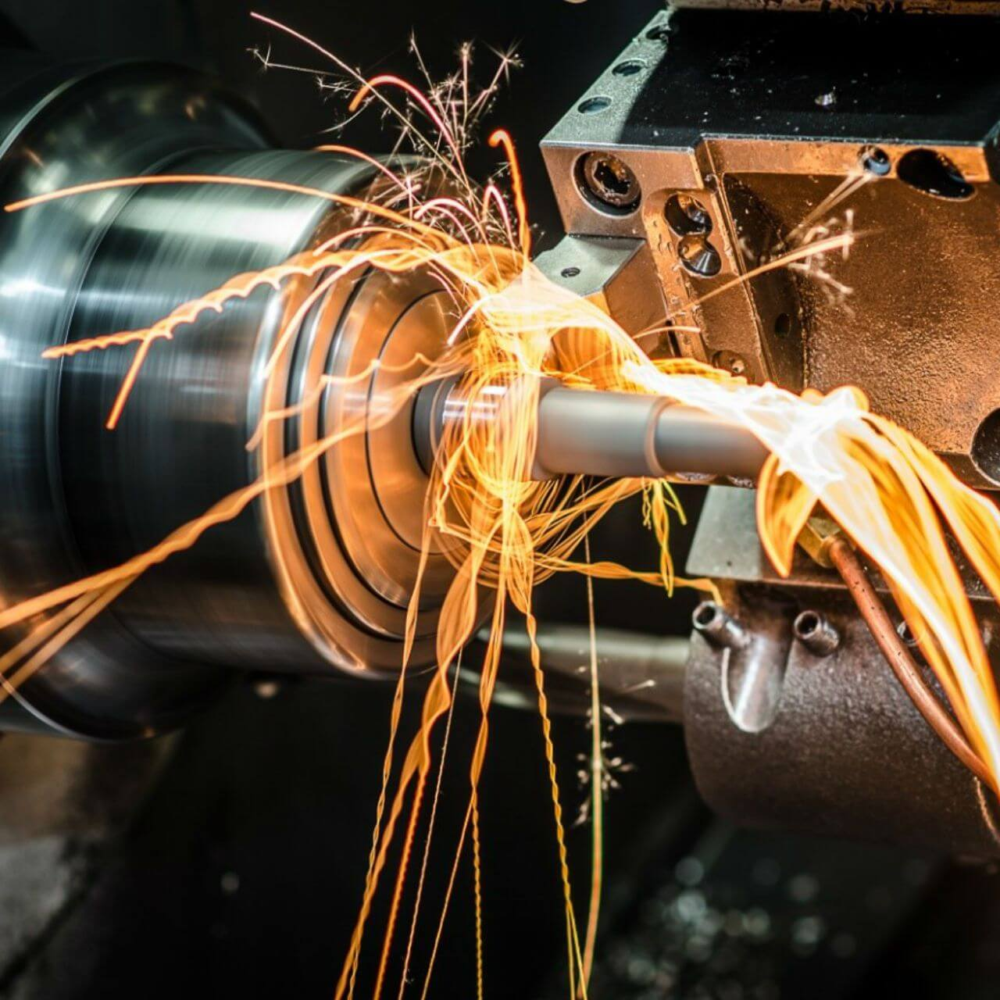
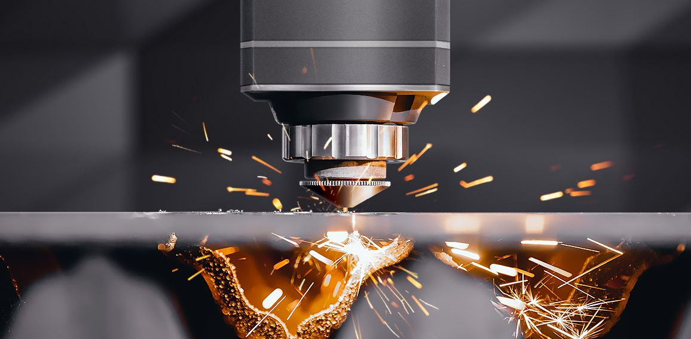

«Temir tools engineering» - оказывает услуги металлообработки и производит детали на заказ. У нас собственная производственная база, позволяющая изготавливать металлические изделия любой сложности. Работы выполняются на современных токарных и фрезерных обрабатывающих центрах с ЧПУ. Так же, у нас есть небольшой парк универсальных металлообрабатывающих станков. Это обеспечивает высокое качество и низкую себестоимость даже при мелкосерийном производстве.
Изготовление деталей по чертежам заказчика Бес Бесперебойную работу любого механизма обеспечивают каче качественные комплектующие. Неудивительно, что к изго изготовлению деталей из из металла на заказ предъявляются высокие требования.
Чтобы простая заготовка стала прос функциональным элементом машины, требуется не просто вырезать деталь из металла на заказ, а сделать это в соответствии с чертежом. Мы ценим ваше время, понимаем, что его может не хватать, и именно поэтому готовы предложить вам срочное изго изготовление деталей из металла по чертежам заказчика.
Чтобы "забронировать" услуги наших специалистов, свяжитесь с менеджером по телефону.
Это - один из основных видов обработки металлов резанием. Она выполняется на специальных токарных станках при помощи различных приспособлений и инструментов. Обработка производится при помощи сверл, резцов, метчиков и плашек. Сам процесс состоит в том, что при помощи инструментов с вращающейся заготовки снимают слой металла. В токарной обработке металлов существует два движения: вращение заготовки (главное движение) и движение суппорта вдоль оси заготовки (движение подачи).С помощью этой обработки получают фасонные, конические, цилиндрические и резьбовые поверхности.
На токарных станках выполняют такие виды работ: черновое, чистовое точение; нарезание резьбы; сверление; растачивание; зенкерование; развертывание; точение канавок и отрезку.
Высокое качество деталей - это один из главных показателей, который должен соблюдаться в процессе производства. Ведь даже самая простая деталь, неправильно выполненная или имеющая какие-либо дефекты, может затормозить работу всего предприятия на неопределенное время. Это может привести к непредсказуемым последствиям
Сегодня фрезерные работы занимают лидирующее место среди возможных способов обработки металлов на нашем предприятии. Такие работы позволяют обеспечить оперативный срок исполнения заказа с точным соблюдением требований по качеству.
Выполнение фрезерных работ на заказ, от которых напрямую зависит качество изготовленных деталей, должно осуществляться профессионалами - настоящими мастерами своего дела. В нашем штате работают исключительно высококвалифицированные специалисты.
Если вам требуется профессионально выполнить сварочные работы в Ташкенте, стоит обратиться к специалистам, работающим в нашей компании. Мы занимаемся сваркой на протяжении долгого времени, что позволяет успешно справляться даже с самыми сложными заказами, причем, точно в установленные сроки, которые заранее оговариваются с клиентом. Стоимость сварочных работ варьируется в зависимости от типа заказанных услуг. Будьте уверены, что наши расценки держатся на доступном уровне. При этом качество работы всегда остается на высоте. В этом вы можете убедиться еще до того, как сделаете заказ в нашей компании.
Пожалуй, трудно себе представить изготовление и сборку какого-либо механизма без того, чтобы не возникла необходимость в сверлении и дальнейшей обработке отверстий.
  Металлообработка предстовляет собой обработку металлических изделий для создания сборочных структур, отдельных частей и больших конструкции. Данное определение охватывает широкую часть применения, начиная от создания мелких деталей и заканчивая постройкой мостов и кораблей.В настоящее время металлообработка считается ведущим направлением производства, позволяющим формировать широкий ассортимент продукции различного практического назначения.Компания "Temir tools engineering" имеет богатый опыт в области обработки металла.
 Робот-манипулятор - тип промышленных роботов. Такие роботы выполняют функции человеческой руки. Соединения руг сегментов манипулятора допускают вращательные и поступательные движения.
В зависимости от специфики, манипуляторы используются в разных отраспях промышленности и и выполняют разные задачи. Но все они призваны упучшить условия труда работников и снизить расходы предприятия.
Роботы-манипуляторы решение для тех сфер, в которых часто случаются ошибки из-за человеческого фактора. Там, где человеку не хватает скорости реакции или существуют опасные условия, приходит на помощь робот.
Механическая обработка металлов - это спектр технологических операций, включающий в себя токарно- фрезерные работы, шлифовку, плазменную и лазерную резку, сварку металла. Специалисты по механообработке должны иметь высокую квалификацию для выполнения сложных работ. Услуги по металлообработке предлагают многие организации, и порой среди большого их количества сложно найти настоящего специалиста. TEMIR TOOLS ENGINEERING выполняет механообработку в ташкент деталей любой сложности высокого качества - по чертежам, эскизам или образцам заказчика.
